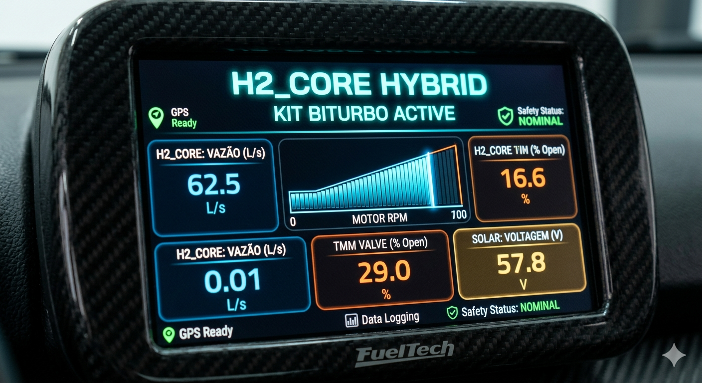

MEMORIAL DESCRITIVO DO PROJETO
O H2_CORE Hybrid é um ecossistema de gestão de eficiência modular que integra injeção catalítica, gestão térmica avançada e captação solar fotovoltaica.
01. INJEÇÃO DE HIDROGÉNIO (O CATALISADOR)
O Hidrogénio é injetado no coletor de admissão para acelerar a queima da gasolina. Enquanto a gasolina tem uma velocidade de chama de 0,4 m/s, o Hidrogénio atinge 3,0 m/s. Ele força a combustão a ser completa e instantânea.
Variações de Especialização:
- KIT TURBO: Configuração padrão para economia urbana. Ajusta a vazão de H2 conforme a pressão da turbina.
- KIT BITURBO: Possui bicos injetores duplos para motores de alta performance, garantindo que o fluxo de H2 acompanhe a aspiração das duas bancadas de cilindros.
- KIT SUPERCHARGER: Focado em torque imediato. O H2 é injetado com pressão positiva desde a marcha lenta para eliminar o esforço inicial do motor.
02. GESTÃO TÉRMICA (CONCEITO PORSCHE TMM)
Diferente de um termostato comum (que apenas abre ou fecha), o nosso Módulo Térmico (TMM) utiliza uma válvula rotativa proporcional controlada por software.
[Image of internal combustion engine cooling system]- Fase de Aquecimento: Bloqueia o fluxo de água para o motor atingir a temperatura ideal rapidamente, diminuindo a viscosidade do óleo e o atrito.
- Fase de Arrefecimento Ativo: Em alta carga, o software antecipa a abertura da válvula, mantendo a temperatura estável e prevenindo o pré-detonamento (batida de pino).
03. CAPTAÇÃO SOLAR (AUTONOMIA ELÉTRICA)
Painéis solares flexíveis são integrados ao teto. Esta energia alimenta o reator de eletrólise e os sensores do sistema. Isso retira a carga do alternador do veículo, libertando cerca de 3 a 5 cavalos de potência que seriam usados apenas para gerar eletricidade.
04. TELEMETRIA E BANCO DE DADOS (TI)
Toda a operação é monitorizada por sensores que enviam dados para um banco SQL. Isto permite ao sistema "aprender" o comportamento do motorista e otimizar a mistura de Hidrogénio em tempo real, garantindo segurança e economia comprovada.
05.CONCEITO FINAL DO PAINEL
